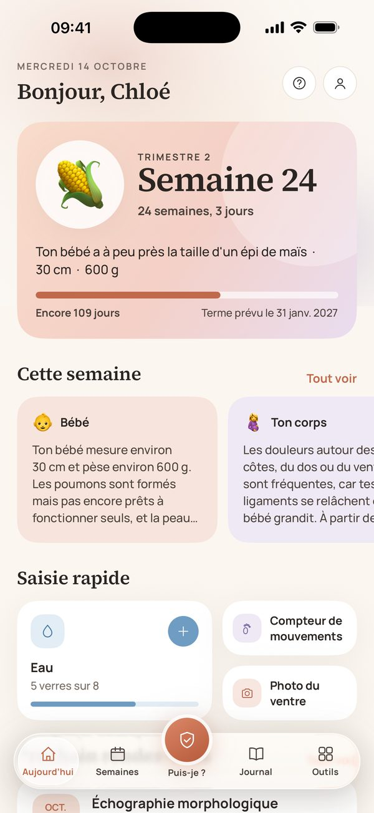
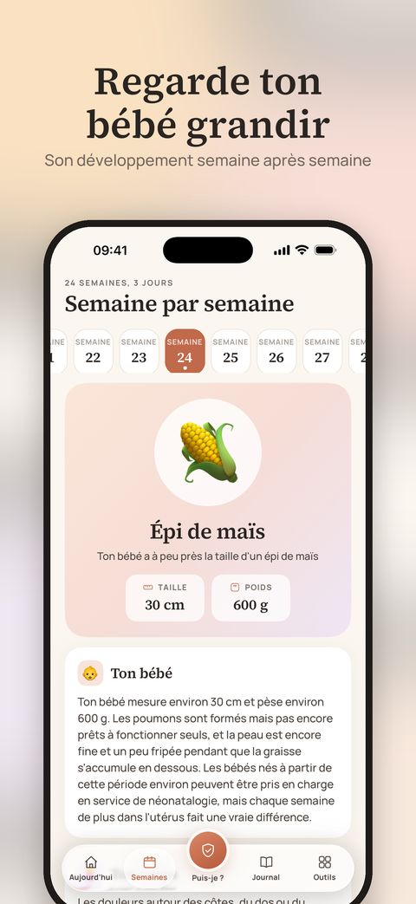
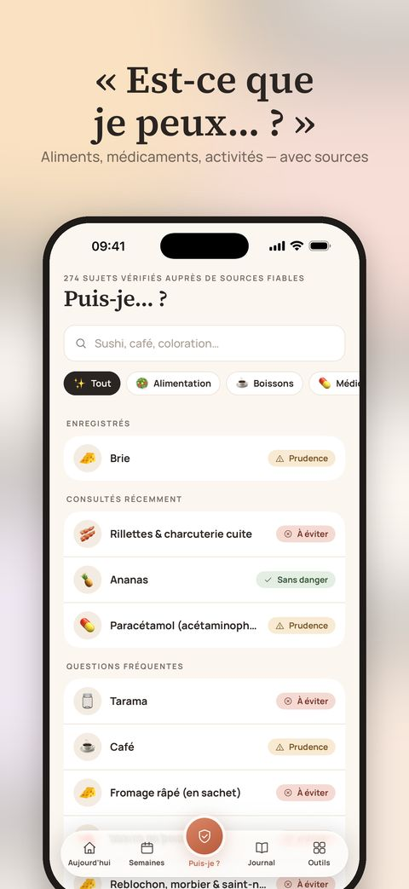
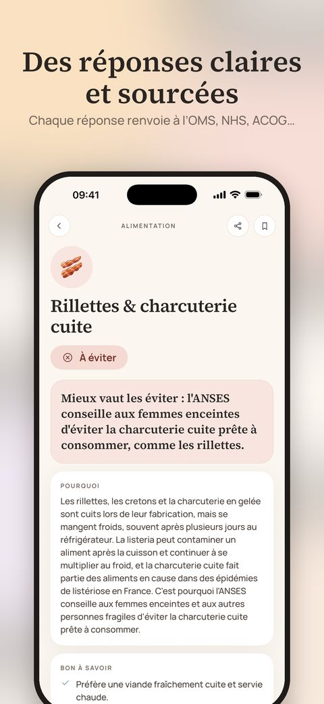
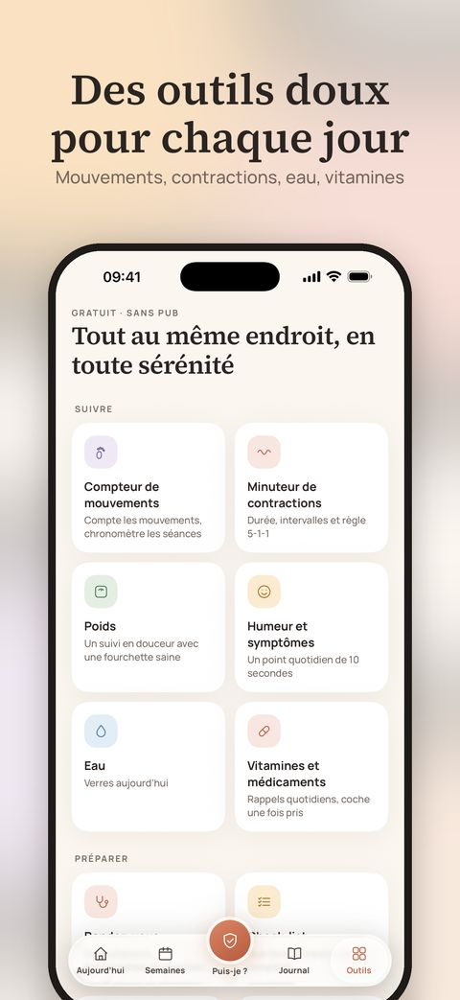
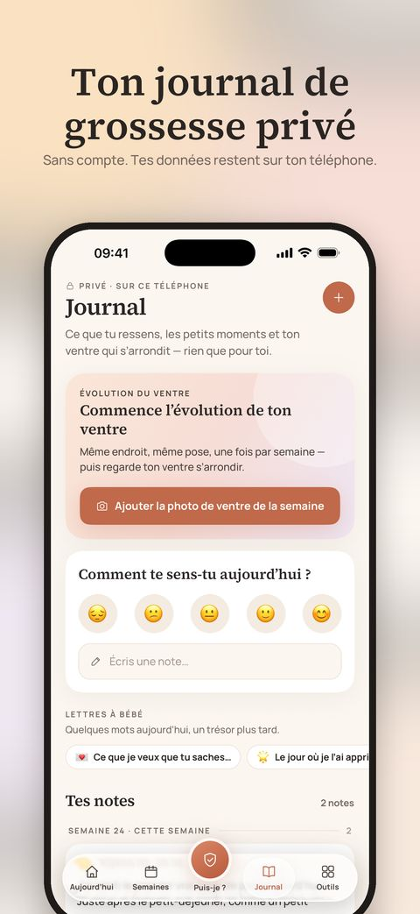

English · Türkçe · Español · Deutsch · Français · Português
Une compagne apaisante pour les neuf mois à venir.
Des repères semaine par semaine, des réponses claires à « Puis-je… ? » avec de vraies sources et des outils tout doux pour chaque jour — le tout en privé, directement sur ton iPhone.
Télécharger dans l’App StoreGratuit · iPhone · Aucun compte requis

Tout ce qu’il te faut, réuni en douceur
Semaine après semaine
La taille de ton bébé, ce qui se développe, ce que tu peux ressentir et trois conseils pratiques pour chaque semaine, de 1 à 42.
Réponses à « Puis-je… ? »
270+ aliments, médicaments, produits de beauté et activités — chacun avec un verdict clair, son explication et des liens vers les recommandations sur lesquelles il s’appuie.
Est-ce normal ?
55 symptômes courants expliqués avec calme, avec ce qui soulage et des signes clairs pour savoir quand appeler ta sage-femme, ton médecin ou les secours.
Des outils tout doux
Compteur de mouvements et minuteur de contractions avec les Activités en direct sur l’écran verrouillé, plus des widgets, rendez-vous, hydratation, vitamines et bien plus.
Un journal privé
Photos de ton ventre, humeurs, notes et lettres à ton bébé. Aucun compte — ton journal ne quitte jamais ton téléphone.
Adapté à ton pays
En English, Türkçe, Español, Deutsch, Français et Português, avec des aliments locaux, les recommandations nationales et le numéro d’urgence de ton pays.
De plus près





🔒 Privé dès la conception
Ni publicité, ni statistiques, ni pistage, ni compte. Tout ce que tu saisis reste sur ton appareil. Les achats sont gérés par Apple, avec un identifiant anonyme pour les confirmer.
✨ Marigold Plus — en option
Les fonctions essentielles sont gratuites. Plus ajoute un rapport PDF prêt pour ton médecin, ton journal en livre souvenir et un collage de photos de ton ventre — en abonnement mensuel avec essai gratuit, ou avec le Pregnancy Pass en achat unique.
Marigold partage des informations générales issues des recommandations de santé publique. Ce n’est ni un avis médical ni un dispositif médical. Suis toujours les conseils de ta sage-femme ou de ton médecin et, en cas d’urgence, appelle le numéro d’urgence local.
Par les créateurs de Baby Bloom — un compagnon tout en douceur pour la vie avec ton nouveau-né. Découvrir Baby Bloom →